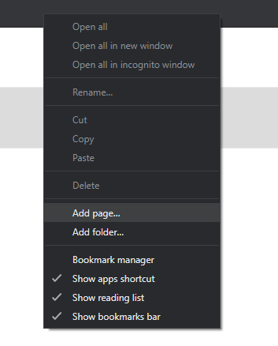

Soweit ich weiß gibt es dafür keine Einstellung
 Außer es gibt schon eine neue Firmware Version ...
Außer es gibt schon eine neue Firmware Version ...
Hast du mal versucht den DNS Server am Endgerät einzustellen?
Liebe Grüße,
Mario
Wo findet man die Einstellung zum Vergeben eines DNS-Servers (z. B. 1.1.1.1) per DHCP bei der Box B529s?
Gibt es diese Einstellung überhaupt?
Bearbeitet von mjnk
Soweit ich weiß gibt es dafür keine Einstellung
 Außer es gibt schon eine neue Firmware Version ...
Außer es gibt schon eine neue Firmware Version ...
Hast du mal versucht den DNS Server am Endgerät einzustellen?
Liebe Grüße,
Mario
Ja, die Einstellung direkt am Endgerät funktioniert eh. Wollte nur den DNS-Server gleich per DHCP zuweisen, damit ich ihn nicht bei allen Endgeräten händisch hinterlegen muss

Vielen Dank für die Antwort.
Meines Wissens geht das definitiv nicht.
Hab weder bei der alten Box, noch bei der neuen eine entsprechende Einstellung gefunden.
LGFW
Am 11/22/2018 um 09:43 schrieb mjnk:Ja, die Einstellung direkt am Endgerät funktioniert eh. Wollte nur den DNS-Server gleich per DHCP zuweisen, damit ich ihn nicht bei allen Endgeräten händisch hinterlegen muss
")
Vielen Dank für die Antwort.
Alles klar. Ja schade, dass es nicht auf der Box direkt geht

Doch, es geht! Die DNS Felder sind versteckt, aber vorhanden. Sie können angezeigt werden, und zwar so:
1. Google Chrome verwenden.
2. Settings > Einloggen > DHCP
3. F12 drücken = developer mode
4. "Console" klicken = Befehle können eingegeben werden.
5. Die untenstehenden 3 Zeilen nach einander hineinkopieren und danach ENTER drücken = die DNS Felder werden sichtbar!!
6. Gewünschte DNS Werte eintragen.
7. Speichern!!
Hier sind die 3 Zeilen:
$('#dhcp_dns_statistic').show();
$('#dhcp_primary_dns').show();
$('#dhcp_secondary_dns').show();
Bearbeitet von benbrown
Am 1/5/2020 um 23:28 schrieb benbrown:1. Google Chrome verwenden.
…das muss nicht sein. Es funktioniert ganz wunderbar auch in FireFox, wo die "Console" sehr ähnlich strukturiert ist (siehe screenshot).
Was ich erfreulich finde, denn Chrome ist so ziemlich die neugierigste, sneakigste Software überhaupt: wenn man sich endlich mal entschlossen hat sie zu entfernen und das auch gründlich tut, kommt ein ganzer Rattenschwanz von Schnüffler-Extensions und tief im System verborgenen "Daemons" zum Vorschein… Firefox und Mozilla sind in dieser Hinsicht geradezu vorbildlich.

Am 1/5/2020 um 23:28 schrieb benbrown:Doch, es geht! Die DNS Felder sind versteckt, aber vorhanden. Sie können angezeigt werden, und zwar so:
1. Google Chrome verwenden.
2. Settings > Einloggen > DHCP
3. F12 drücken = developer mode
4. "Console" klicken = Befehle können eingegeben werden.
5. Die untenstehenden 3 Zeilen nach einander hineinkopieren und danach ENTER drücken = die DNS Felder werden sichtbar!!
6. Gewünschte DNS Werte eintragen.
7. Speichern!!
Hier sind die 3 Zeilen:
$('#dhcp_dns_statistic').show();
$('#dhcp_primary_dns').show();
$('#dhcp_secondary_dns').show();
hab ich versucht, hat leider nicht geklappt. nach eingabe der zeilen + ENTER passiert einfach..nichts.
kann es sein dass magenta dafür schon nen patch released hat? n gutes monat später?
Am 04/02/2020 um 05:28 schrieb sangok:kann es sein dass magenta dafür schon nen patch released hat? n gutes monat später?
Nö, geht noch immer. Bitte nochmal versuchen.
On 1/5/2020 at 11:28 PM, benbrown said:Yes, it works! The DNS fields are hidden, but available. They can be displayed as follows:
1. Use Google Chrome.
2. Settings> Login> DHCP
3. Press F12 = developer mode
4. Click "Console" = commands can be entered.
5. Copy the 3 lines below one after the other and then press ENTER = the DNS fields become visible !!
6. Enter the desired DNS values.
7. Save !!
Here are the 3 lines:
$ ('# dhcp_dns_statistic'). show ();
$ ('# dhcp_primary_dns'). show ();
$ ('# dhcp_secondary_dns'). show ();
Hi Ben
I am unfamiliar with the console use, do you have to save anything? I have been trying multiple times to follow your instructions without any luck, any ideas?
Kind Regards, Steve
Am 2/4/2020 um 05:28 schrieb sangok:
hab ich versucht, hat leider nicht geklappt. nach eingabe der zeilen + ENTER passiert einfach..nichts.
kann es sein dass magenta dafür schon nen patch released hat? n gutes monat später?
Am 1/2/2021 um 18:09 schrieb Steve Carroll:Hi Ben
I am unfamiliar with the console use, do you have to save anything? I have been trying multiple times to follow your instructions without any luck, any ideas?
Kind Regards, Steve
Probiert mal das:
$("#dhcp_dns").show()
Sollte gehen!
Um das ganze einfacher zu machen könnt ihr euch ein Lesezeichen in der Lesezeichen Leiste erstellen (1) wo ihr als ULR folgendes eintragt:
javascript:$("#dhcp_dns").show()
Als Name könnt ihr irgendwas verwenden. (2) Dann könnt ihr jederzeit durch Klicken auf das Lesezeichen die DNS Einstellungen anzeigen lassen. (3)
---
Try this:
$("#dhcp_dns").show()
That should work!
To make the whole thing easier you can create a bookmark in the bookmark bar (1) and enter the following as the URL:
javascript:$("#dhcp_dns").show()
You can choose any name you want. (2) Then you can just click on the bookmark and you should see your DNS Settings (3)
(1) Rechtsklick auf die Lesezeichen Leiste und Seite hinzufügen / Right click on the bookmark bar and Add page

(2) URL und Name eintragen (ggf. auch Ordner auswählen) / Enter URL and name (if you want you can also choose a folder)
(3) Klick auf das Lesezeichen zeigt die DNS Einstellungen an / Clicking on the bookmark shows your DNS settings